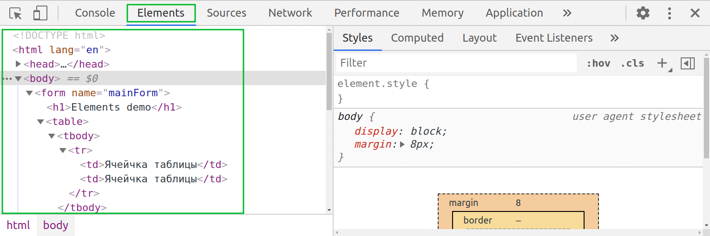
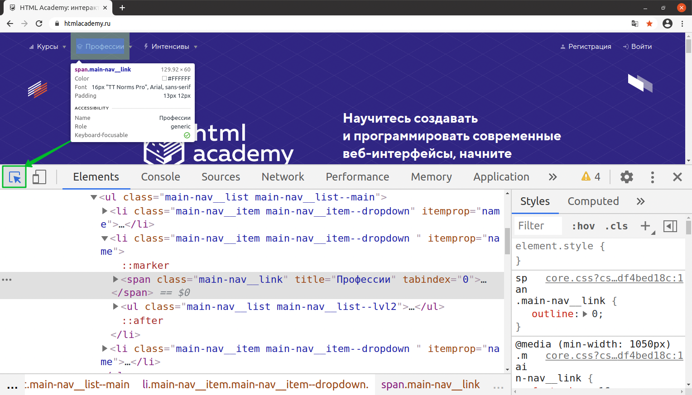
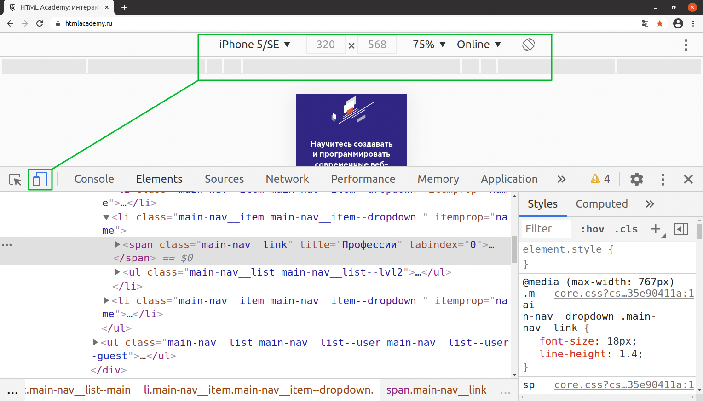

После полной загрузки страницы браузер создаёт объектную модель документа (Document Object Model),
в которой хранится дерево элементов страницы. Для навигации по DOM-дереву в DevTools предусмотрена вкладка Elements.
Рисунок 1. DOM на вкладке Elements
Стоит учитывать, что DOM генерируется в процессе загрузки страницы и хоть он визуально похож на разметку — на самом деле ей не является. В процессе генерации DOM могут быть исправлены некоторые ошибки разметки и добавлены новые элементы с помощью JavaScript.
Посмотреть разметку страницы можно по клику на произвольной области экрана правой кнопкой мыши → «Просмотр кода страницы».
На примере видно, что при генерации DOM в table появились обязательные теги tbody и tr, появился закрывающий тег у form, также с помощью JavaScript на странице появились чекбоксы и заголовок, но сама разметка при этом осталась в исходном состоянии.
Возможности
Кнопка inspect позволяет выбрать элемент на странице с помощью мыши.
Рисунок 2. Кнопка Inspect
Альтернативные способы выбора элемента:
Правый клик по элементу → Просмотреть код (Inspect).
Комбинация клавиш — Command+Option+C (macOS) или Control+Shift+C (Windows, Linux) + клик по элементу.
Кнопка переключения Device Toolbar используется для оценки того, как страница выглядит и работает на мобильном устройстве. Об этой возможности поговорим отдельно.
Рисунок 3. Кнопка переключения Device Toolbar
Секция с вкладками в правой боковой панели DevTools
Styles — выводит и позволяет редактировать стили элемента, включая наследуемые от родительских элементов,
показывает блочную модель элемента.
Computed — на этой вкладке перечислены только стили, которые отображаются на экране.
Все относительные единицы будут пересчитаны в пиксели.
Layout — предоставляет наглядное отображение всех CSS grid сеток на странице. Подробнее в документации по Chrome DevTools.
Event Listeners — выводит обработчики событий элемента.
DOM Breakpoints — используется для остановки кода, который изменяет выбранный элемент или его детей. Подробнее в документации по Chrome DevTools.
Properties — выводит все доступные свойства элемента.
Accessibility — позволяет проверять каждый элемент по метрикам доступности. Подробнее в документации по Chrome DevTools.